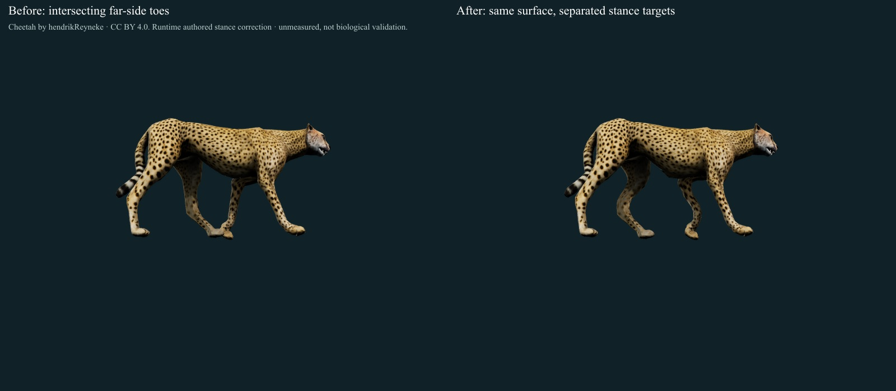
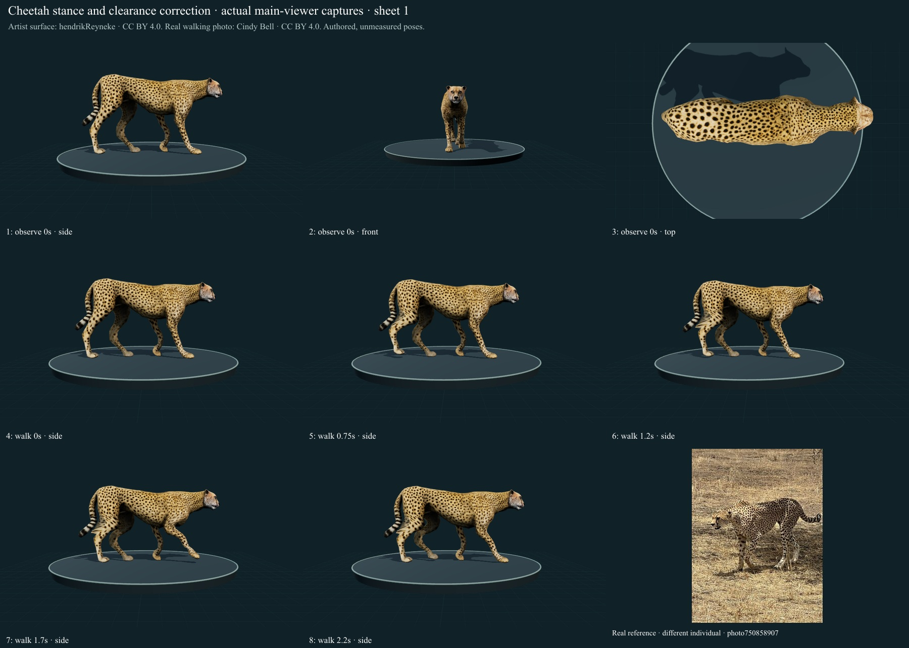
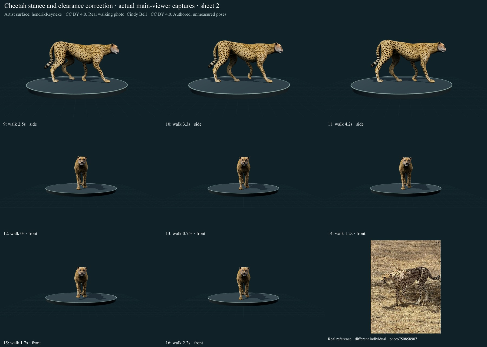
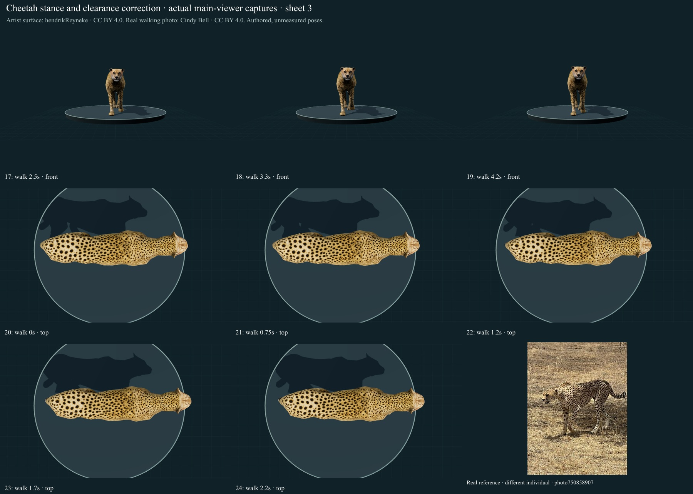
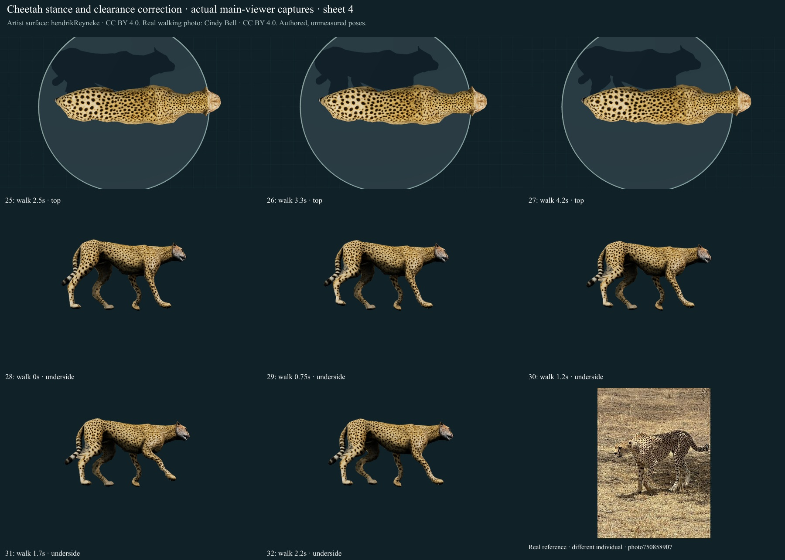
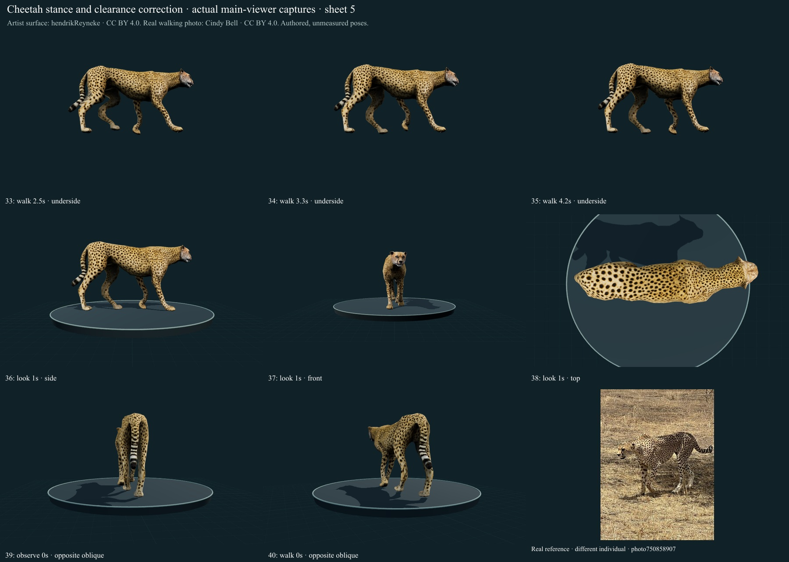
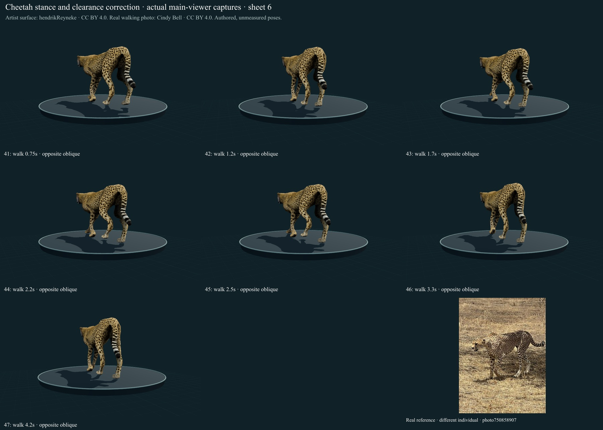

The previously crowded far-side feet really intersected. This pass corrects that geometry defect across the neutral stance, local head turn and finite stepping study. It adds zero species and does not establish biological validation.
Confirmed far-side toe intersection in the source-derived neutral stance and all 113 sampled walking phases using non-coplanar edge/triangle crossings, rather than relying on overlapping screen silhouettes.
Separated the right hind and fore stance targets along the travel axis and articulated their full chains on the same credited surface. The same corrected stance now carries through Observe, head turning and bounded walking.
Retained fixed limb lengths, UV/skin continuity, authored stance support and finite playback. No mature model resizing, rigid bobbing or new gait label was introduced.
Captured 47 actual final main-viewer states in side/front/top, low-side and opposite/rear-oblique views; retained six credited public sheets and a before/after comparison.

Actual main-viewer low-side captures, same artist surface and retained textures. Targets are authored desk-space offsets, not measured animal trajectories.
Reference comparison and limits
Authentic walking photographs and the previously rendered Day and Jayne (2007) Figure 2/Table 3, printed page 645, were inspected again. They support comparison of digitigrade limb segments and visible support/recovery; no positions, segment proportions or motion timings were fitted to the published animals. The study included three captive cheetahs. Smithsonian's species account supports the slender long-legged body, short spotted fur and blunt semi-retractile claw context; it is not a collection determination or a source for the clearance offset.
At 113 sampled walking phases plus Observe, the retained distal surfaces below normalized source Y 0.55 (display units, not physical dimensions) had no detected non-coplanar edge/triangle crossings after correction, compared with crossings at all 114 baseline states. A regression additionally samples five head-turn states. This restricted test excludes proximal body surfaces, coplanar overlap, between-sample events and contact forces. It is a software geometry check.
47 actual final views
Side/front/top and low-side views cover eight walking times; Observe and head turning were also captured. Nine additional native orbit captures show opposite/rear oblique aspects. Those angles vary; their preset metadata retains the last Side label, as disclosed in the frame ledger. Top views show the coat/body axis but occlude foot contact.

Frames 1, 2, 3, 4, 5, 6, 7, 8 · SHA256 f1c6e18e763bd83318c3891edfa0214c89ebbdf0a85a2caab60db3e42bd6436c. Artist surface hendrikReyneke, CC BY 4.0; authentic walking photograph Cindy Bell, CC BY 4.0, different individual.

Frames 9, 10, 11, 12, 13, 14, 15, 16 · SHA256 e5f13080cb194a5c7fdf1b8ff33f1ca7aed0e7e326657e7d20d9bdf16d31da70. Artist surface hendrikReyneke, CC BY 4.0; authentic walking photograph Cindy Bell, CC BY 4.0, different individual.

Frames 17, 18, 19, 20, 21, 22, 23, 24 · SHA256 3f22d250d4a69694b44c05d826c9570f570603e43b278c9bde461bb0fef3ad91. Artist surface hendrikReyneke, CC BY 4.0; authentic walking photograph Cindy Bell, CC BY 4.0, different individual.

Frames 25, 26, 27, 28, 29, 30, 31, 32 · SHA256 a02f1802c3d6b47c91297ff7253d51235237ea2ecb93a5186592f0afbe8ff724. Artist surface hendrikReyneke, CC BY 4.0; authentic walking photograph Cindy Bell, CC BY 4.0, different individual.

Frames 33, 34, 35, 36, 37, 38, 39, 40 · SHA256 52a144ac6f090251f8196dbb424b15a08f413d1acadc7987dbc94828eb263cb0. Artist surface hendrikReyneke, CC BY 4.0; authentic walking photograph Cindy Bell, CC BY 4.0, different individual.

Frames 41, 42, 43, 44, 45, 46, 47 · SHA256 cec46c3a91654c98c620fc42e407c524592ad14cd9f688ea52ad3698416ddbbf. Artist surface hendrikReyneke, CC BY 4.0; authentic walking photograph Cindy Bell, CC BY 4.0, different individual.
Remaining work
This clearance repair does not establish whole-body self-collision freedom, continuous collision detection, soft-tissue contact, measured joint limits or biomechanical validity.
The face, neck/tail proportions, hip and carpal volumes, digits/pads and fur optics remain partly stylized and unmeasured. Existing source textures are retained; no new photographic calibration is claimed.
Galloping, prey handling, supported repose and sleep remain unavailable. Existing unfinished development/movement elsewhere is unchanged.
The collection still contains 307 public species; five of the fifty requested new large animals are admitted and 45 nominations remain. This correction adds zero species; 243 remain to reach 550.
Evidence and reuse
Smithsonian National Zoo: Cheetah: Physical description, taxonomy and selected ecology read; an institutional species account, not a collection determination or quantitative model fit.
IUCN/SSC Cat Specialist Group: Cheetah: Selected morphology, habitat and species/subspecies context read; broad species retained. No population or individual determination.
Day and Jayne (2007): Interspecific scaling of felid limb posture: Selected methods, Table 1, actual Figure2 and Table 3 on printed p. 645 read/rendered. Nine felids/25 captive individuals, including three cheetahs, walking on firm level surfaces. Joint conventions and lateral walking guide a qualitative rig; no digitized trajectories or measured fit imported. Official PDF text accessed; figure rendered from a mirror after direct official download failed.
ASM Mammal Diversity Database v2.5: Exact extant species binomial checked in the official current table. Subspecies names are not additional archive species.
GBIF accepted species linkage: Exact accepted species-rank identity; georeferenced records do not define native ranges.
Cindy Bell: cheetah photograph: Community research-grade observation labelled Acinonyx jubatus jubatus, visually compatible with the broad species Acinonyx jubatus. Subspecies not independently determined or counted separately; not a Smithsonian collection determination.
Cheetah by hendrikReyneke: Archived CC BY 4.0 artist asset obtained without sign-in through Objaverse. Source title is not a taxonomic determination.
Original/delivered static artist GLB remains SHA256 97c5782a1341f68abc12df1b294486f51f6a44bbc89e0d99efa5085cd9778d99. Runtime rig, skinning, fur/claw derivatives and stance correction are disclosed archive changes. The walking/face photographs by Cindy Bell are CC BY 4.0; the lateral photograph by lallen (L&K Photos) is CC0 1.0 with watermark retained. Only actual downloaded 1024px derivative and delivery hashes are claimed; original-resolution bytes were not retrieved. No generated organism photographs. The paper/figure is a private scholarly reference and is not redistributed.